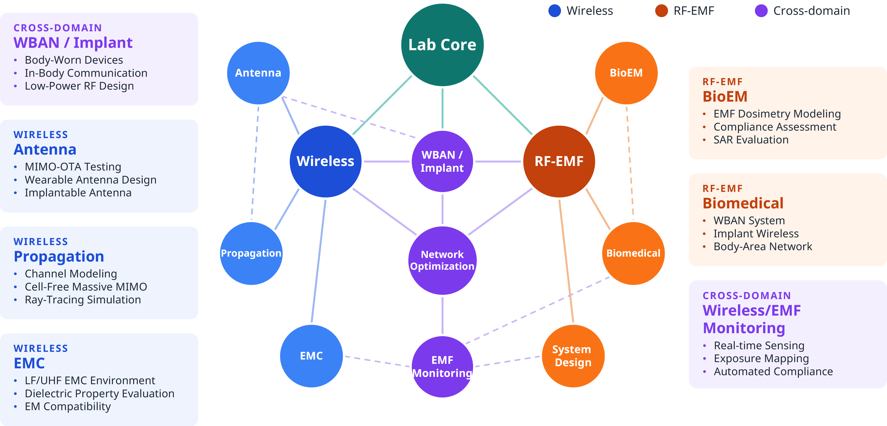
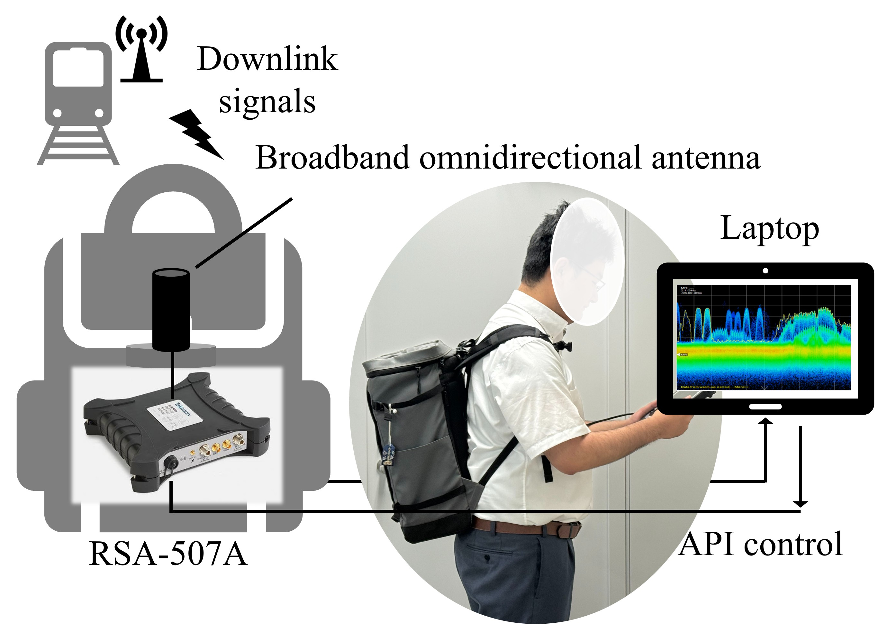
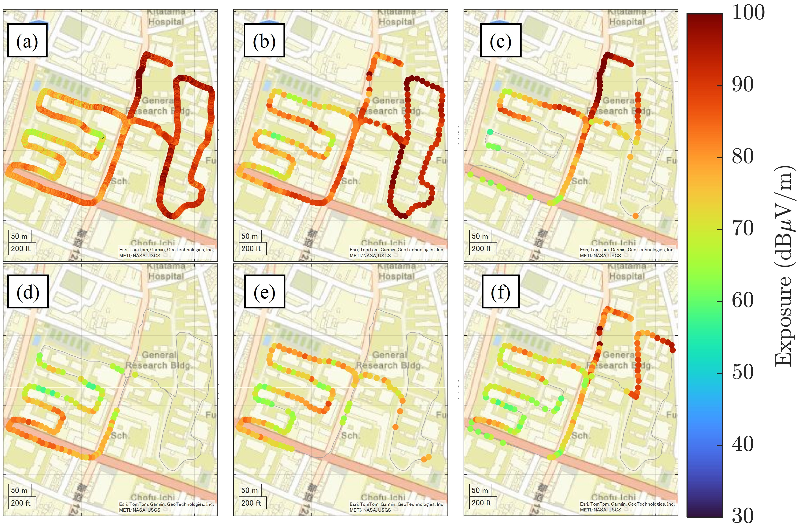
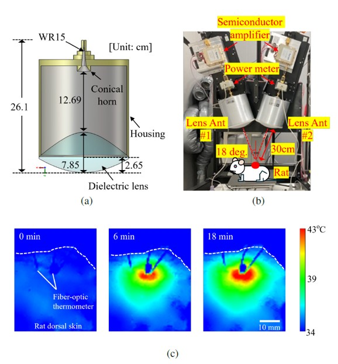
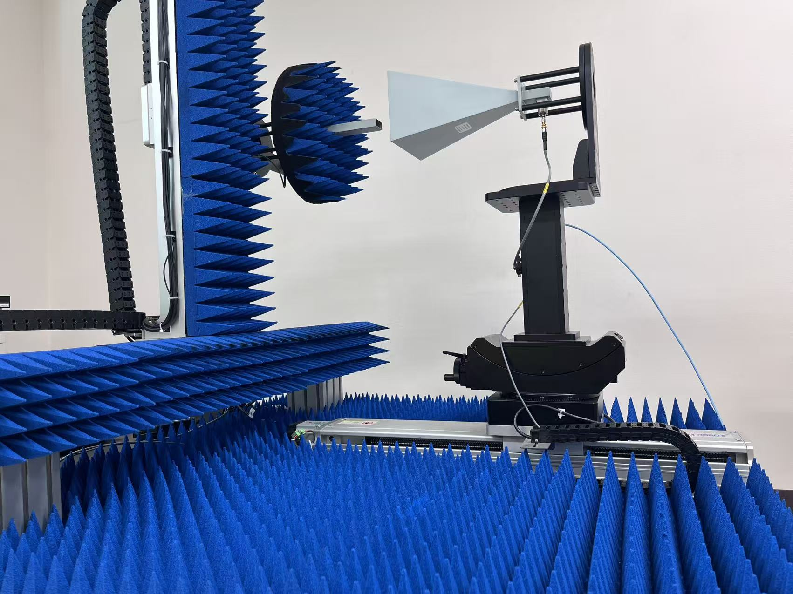
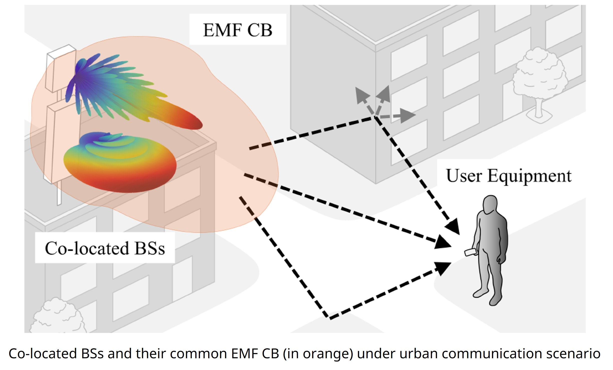
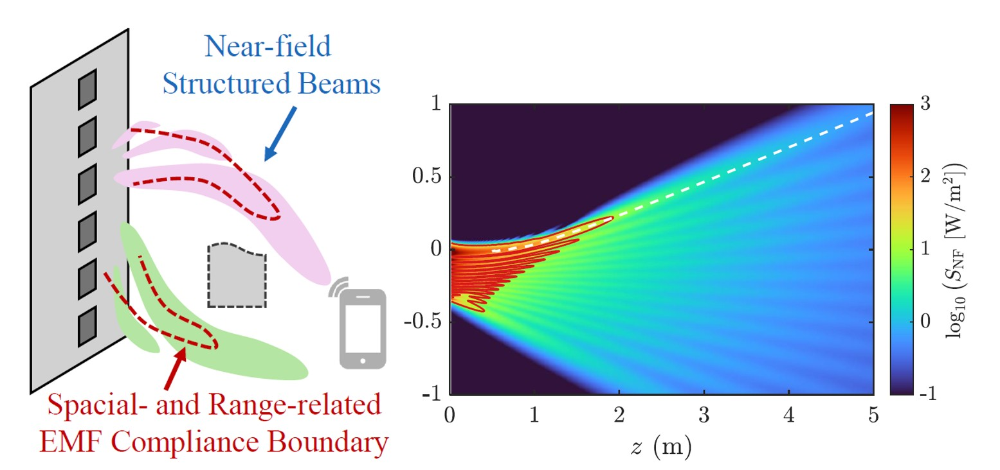
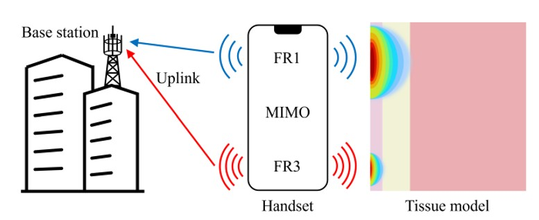
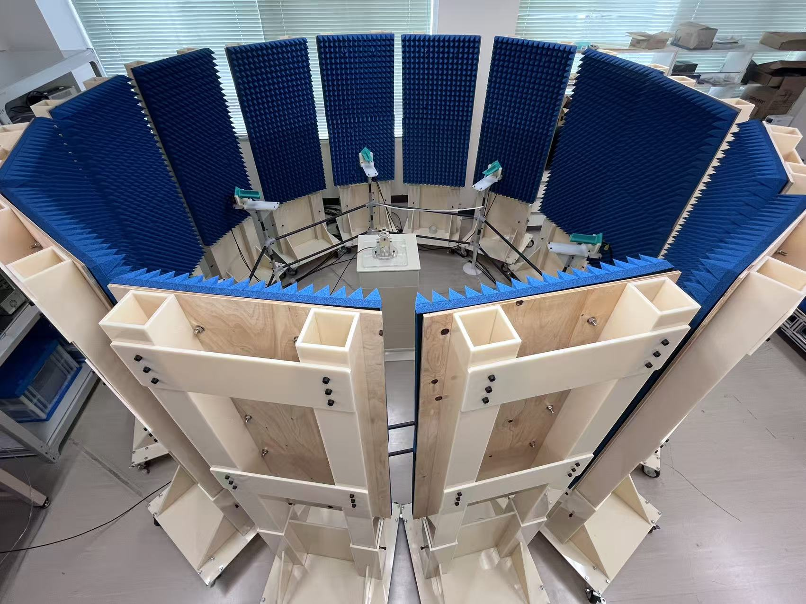
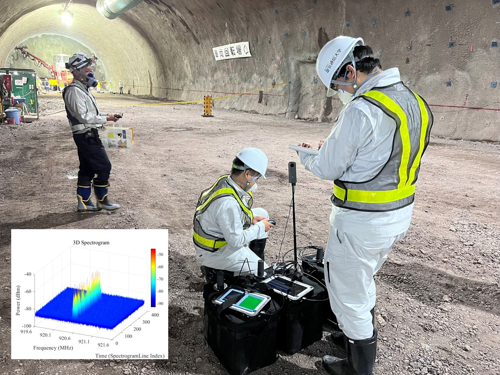

Research Overview
Our laboratory aims to make ultra-high-speed wireless connectivity and human electromagnetic safety compatible in the 5G-Advanced/6G era, especially in dense and harsh environments such as subway tunnels and construction sites. Our research is organized around two core pillars and the cross-domain topics that connect them:
Wireless — antenna design and MIMO-OTA testing, radio propagation and channel modeling
(Cell-Free Massive MIMO, ray-tracing simulation), and EMC in LF/UHF industrial environments.
RF-EMF — bioelectromagnetics (EMF dosimetry, compliance assessment, SAR/APD evaluation),
biomedical wireless devices, and EMF-aware system design.
Cross-domain — wearable/implantable body-area networks, network optimization under EMF constraints,
and real-time EMF monitoring with automated compliance assessment.

Research Projects
Design for Balancing Communication Quality through Composite Radio Wave Exposure in Subway Tunnels and Virtual Space Projection ▾
In subway systems, passengers stand within a few meters of the base stations installed on platforms and in tunnels, and several operators share the same platform and bore. Throughput and RF-EMF exposure are therefore coupled far more tightly than in an outdoor macro cell. This project measures the real radio environment on site, projects it into a virtual space through measurement-calibrated channel models, and evaluates communication quality and EMF exposure within a single framework, so that base-station placement, feeding architecture and coordination schemes can be designed under an explicit exposure constraint.

images/r1_subway_measurement.jpgDual-band in-car measurement in a subway tunnel
We measured 4G/5G downlink signals inside a train on a Tokyo subway line. The 2.1 GHz band was nearly flat along the tunnel, while 3.5 GHz decayed beyond the tunnel mouth, revealing different feeding architectures. The data calibrate a 3D cluster channel model for link-level simulation, showing that dual-band CoMP joint transmission raises the 10th-percentile throughput by about 75%, at the cost of 3 dB exposure margin for platform bystanders.

images/r1_open_site_system.jpgeNB-specific RF-EMF measurement system
A tri-axial field probe with a real-time spectrum analyzer, a cellular network scanner and GPS logging measure the total electric field together with Cell ID, RSRP and CINR. Using RSRP-based weights, the total exposure is attributed to individual base stations (eNBs) without prior knowledge of their locations. Campus measurements of three operators show that areas with high exposure but low spectral efficiency are dominated by non-serving eNBs.
Research on the Thermophysiological Reactions of Radio Waves Towards Beyond 5G ▾
With the expanding use of millimeter-wave and FR3-band devices close to the human body, the thermophysiological effects of radio-wave exposure need to be clarified in detail. This project investigates the biological responses of skin tissue to high-frequency exposure through animal experiments and numerical dosimetry, aiming to obtain evidence that can support international exposure guidelines.
Collaborators: Hokkaido University (lead), UEC, Aichi Gakuin University, Kurume University

images/r2_60ghz_rat_exposure.jpg60 GHz focused-beam exposure on rat dorsal skin
A 60 GHz dual-lens exposure system generates a localized beam of about 1 cm² on rat skin. A hybrid plane-wave spectrum (PWS) and FDTD method computes the absorbed power density (APD) and temperature rise in high-resolution anatomical models. Blood perfusion rates estimated from the measured heating curves are fed into the bioheat equation, yielding an experimentally validated thermal model. (IEEE Trans. EMC)

images/r2_fr3_nearfield_antenna.jpgNon-invasive APD estimation in the FR3 band
To assess near-field exposure at 7 GHz without implanted probes, the electric field transmitted through a skin-equivalent phantom is measured behind it and back-propagated with a PWS-based inverse algorithm to reconstruct the APD on the skin surface. Simulations show that the method locates the hotspot accurately and gives a conservative estimate of the peak APD. (URSI GASS 2026)
Creation of a Radio Wave Co-creation Innovation Hub to Support the Expansion of Radio Wave Utilization and the Sustainable Development of Wireless Communication ▾
As part of UEC's J-PEAKS program, this project develops technologies that allow wireless systems to expand their use of radio waves while keeping human exposure under control, from base-station deployment and beamforming to handset antenna design and over-the-air testing.

images/r3_colocated_bs_boundary.jpgEMF compliance boundary as a resource for co-located base stations
Co-located multi-band base stations share one EMF exposure budget. We reframe the compliance boundary (CB) from a passive regulatory limit into an allocatable spatial resource: CB allocation ratios derived from IEC 62232 are mapped to per-BS transmit power and downlink throughput. Sionna ray tracing and link-level simulation in a dense-urban scenario show that CB allocation adds a resource dimension beyond power control. (Submitted to IEEE TAP)

images/r3_airy_beam_boundary.jpgCompliance boundaries for obstacle-avoiding near-field beams
Structured near-field beams such as Airy beams can bend around blockages, but their range-dependent fields break the far-field assumptions of conventional compliance-boundary assessment. We develop spatial CB formulations for single-beam, worst-case and time-averaged multi-beam operation. A 28 GHz, 128-element array generating six Airy beams shows that near-field CBs must be treated as spatial, operating-state-dependent quantities. (Submitted to IEEE TAP)

images/r3_fr1_fr3_allocation.jpgExposure-constrained resource allocation for FR1/FR3 user equipment
6G handsets are expected to transmit simultaneously in FR1 (2.1 GHz) and FR3 (10 GHz), so their accumulated exposure must stay within limits. Uniform power back-off loses up to 42% of uplink throughput; jointly optimizing transmit power, bandwidth and MIMO rank across both bands limits the loss to 6–11%. The results also show that exposure from FR3 antennas is the key factor limiting FR3 performance. (Submitted to IEEE TAP)

images/r3_fading_emulator_sdr.jpgSDR-based OTA testing with a 2-D spatial fading emulator
A 920 MHz over-the-air test system combines a two-dimensional fading emulator, using phase shifters and dual-polarized scattering probes, with a USRP software-defined radio for real-time baseband processing. Phase-control sequences based on the Clarke model reproduce Rayleigh fading, and the measured QPSK bit-error rate agrees with theory, providing a reproducible, modulation-flexible platform for physical-layer OTA testing. (ISAP)
Research and Development Related to the Automation and Unmanned Operation of Hazardous Work such as Tunnel Blasting ▾
Wireless electronic detonators are a key technology for labor-saving and unmanned tunnel blasting. In the target system, a UHF signal from the transmitting unit is converted by repeaters into an LF (255 kHz) signal and radiated by a large loop antenna to the detonators embedded in the bedrock, since LF waves suffer far less attenuation in rock than UHF. We evaluate both the UHF and LF links to establish reliable wireless detonation at actual construction sites.
Collaborators: Fujii Lab. (UEC), Li Lab. (lead), NOF Corporation, Construction Technology Research Institute, Maeda Corporation, Taisei Corporation, Kumagai Gumi

images/r4_tunnel_site_test.jpgLF field-strength evaluation at tunnel construction sites
The near-field distribution of the 255 kHz loop antenna was first calibrated in an open site, where measurements agreed well with analysis up to 2 m. Measurements were then carried out at three tunnel construction sites with different rock types (andesite tuff, sandstone and granite porphyry) while varying the loop antenna angle, and the path-loss characteristics were analyzed with principal component analysis, revealing the influence of the antenna null directions. (IWSA 2024, AP-RASC 2025)